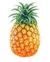

Ananas

L'ananas (Ananas comosus) est une plante xérophyte, originaire d'Amérique du Sud plus spécifiquement du Paraguay, du nord-est de l'Argentine et sud du Brésil. Il est connu principalement pour son fruit comestible, qui est en réalité un fruit composé. Le mot ananas vient du tupi-guarani naná naná, qui signifie « parfum des parfums ». Le terme ananas est également un nom vernaculaire ambigu qui peut désigner plusieurs autres espèces de Bromeliaceae, pas à peu comestibles comme l'espèce Glomeropitcairnia penduliflora désignée par les termes « ananas sauvage », « ananas bois » et « zananas mawon », ou encore plusieurs espèces du genre botanique Ananas comme Ananas bracteatus sous les noms d'« ananas sauvage » et « ananas marron ».
Pour plus d'information
Revenir à l'acceuil